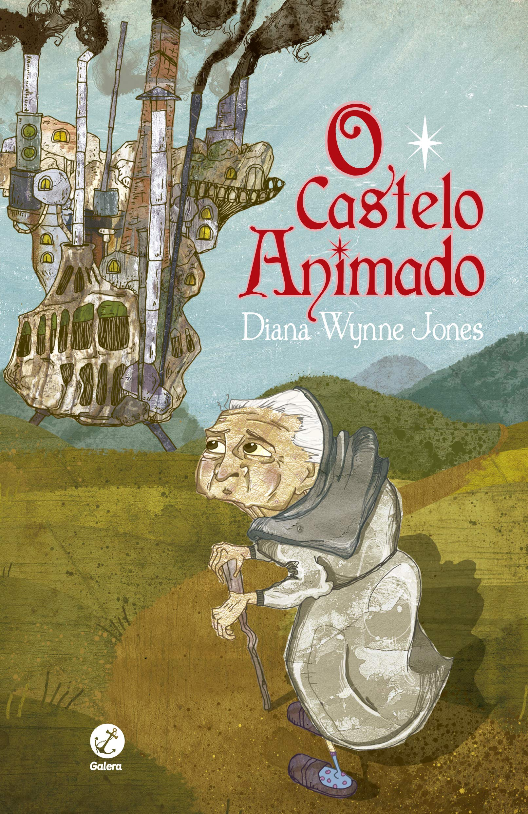

Sinopse: Em "O Castelo Animado" conheça a história de Sophie Hatter: após, certo dia, ser amaldiçoada pela Bruxa das Terras Desoladas, a jovem se torna uma senhora de 90 anos. Receosa e insegura por conta de sua nova aparência, ela decide fugir de sua família e vai em busca de ajuda e um lugar para ficar. É então que se depara com o castelo do terrível Mago Howl, conhecido por devorar o coração das moças do povoado. No entanto, quanto mais os dias passam, mais Sophie entende que, na verdade, a realidade vai além do que se vê – e percebe que é possível, sim, encontrar humanidade e compaixão dentro de cada um.
